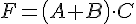
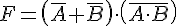
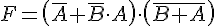
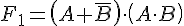
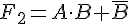
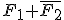
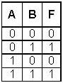
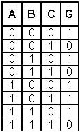
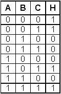
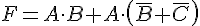

Electrónica digital
6.4. Funciones lógicas (I). Operaciones.
Ejercicio 17
Obtén la tabla de verdad de las funciones
siguientes: a) NOT; b) AND; c) OR;
d) NOR; e) NAND.
Ejercicio 18
Demuestra los Teoremas del Álgebra de Boole empleando tablas de verdad: obtén la tabla de verdad de la expresión de la izquierda, la de la derecha y compáralas. (El teorema estará demostrado si ambas tablas de verdad son iguales).
Ejercicio 19
Comprueba, empleando una tabla de verdad, las leyes
de De Morgan.
Ejercicio 20
Obtén la tabla de verdad de la función: 
Ejercicio 21
Obtén la tabla de verdad de la función:
Ejercicio 22
Obtén la tabla de verdad de la función 
Ejercicio 23
Obtén la tabla de verdad de la
función: 
Ejercicio 24
Obtén la tabla de verdad de la función: 
Ejercicio 25
Obtén la tabla de verdad de la
función:  . Simplifica hasta que sea posible.
. Simplifica hasta que sea posible.
. Simplifica hasta que sea posible.
Ejercicio 26
Considera las funciones:  y  . Construye la tabla de verdad de ambas funciones. También se
pide: a) tabla de verdad de la función F1 + F2; b)
tabla de verdad de la función F1·F2; c) tabla de
verdad de la función ; d) simplifica la expresión final de cada uno de los
resultados.
Ejercicio 27

Obtén la expresión de la función F cuya tabla de
verdad se da a la derecha.
Ejercicio 28
Obtén la expresión de la función G cuya tabla de verdad aparece a la izquierda. Simplifícala todo lo que puedas.
Ejercicio 29
Simplifica por el método de
Karnaugh la función lógica H cuya tabla de verdad es la que aparece a la
derecha.
Ejercicio 30
Obtén la tabla de verdad de la
función suma de F y G, a la que llamaremos I. Es decir: I = G + H. Simplifica
la función que resulta por el método de Karnaugh. Implementa la función
resultante con puertas lógicas.
Ejercicio 31
Obtén la tabla de verdad de la
función J = G·H. Simplifica la función que resulta, empleando el método de
Karnaugh. Impleméntala con puertas lógicas.
Ejercicio 32
Sea la función lógica: . Se pide:
a) Obtén su tabla de verdad.
b) Simplifícala.
c) Implementa las dos formas (simplificada y no simplificada) con puertas lógicas. A la luz del resultado, contesta: ¿Por qué debe simplificarse una función lógica?
Obra publicada con Licencia Creative Commons Reconocimiento No comercial Compartir igual 4.0